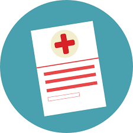
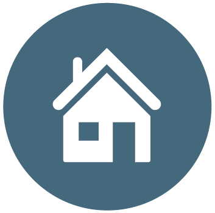

<!--
  Generated template for the ResourcesPage page.

  See http://ionicframework.com/docs/components/#navigation for more info on
  Ionic pages and navigation.
-->
<ion-header>

  <ion-navbar hideBackButton>
    <ion-title>Resources</ion-title>
    <ion-buttons end>
      <button ion-button icon-only (click)="goToAddService(data)">
        <ion-icon name="add"></ion-icon>
      </button>
    </ion-buttons>
  </ion-navbar>

</ion-header>


<ion-content padding>

	<ion-list>
		<ion-list-header>
	    Eligible
	  </ion-list-header>
	  <ion-item *ngFor="let item of payload" (click)="goToDetails(data)">
	    <ion-avatar item-start>
	      
	    </ion-avatar>
	    <h2>{{ item.abv }}</h2>
	    <h3>{{ item.name }}</h3>
	    <p [ngStyle]="{'color': item.status}">{{ item.status_comp }}</p>
	  </ion-item>
	</ion-list>


	<!-- <ion-list>
		<ion-list-header>
	    Eligible
	  </ion-list-header>
	  <ion-item (click)="goToDetails(data)">
	    <ion-avatar item-start>
	      
	    </ion-avatar>
	    <h2>MAP</h2>
	    <h3>Medical Access Program</h3>
	    <p style='color:green;'>Status: Ready</p>
	  </ion-item>

	  <ion-item (click)="goToDetails()">
	    <ion-avatar item-start>
	      
	    </ion-avatar>
	    <h2>ECHO</h2>
	    <h3>Ending Community Homelessness Coalition</h3>
	    <p style='color:green;'>Status: Ready</p>
	  </ion-item>
	</ion-list>
		<ion-list>
		<ion-list-header>
	    Missing Documents
	  </ion-list-header>
	  <ion-item (click)="goToDetails()">
	    <ion-avatar item-start>
	      
	    </ion-avatar>
	    <h2>SOAR</h2>
	    <h3>SSI/SSDI Outreach, Access, and Recovery</h3>
	    <p style='color:red;'>Status: Missing Document</p>
	  </ion-item>
	</ion-list> -->
</ion-content>
